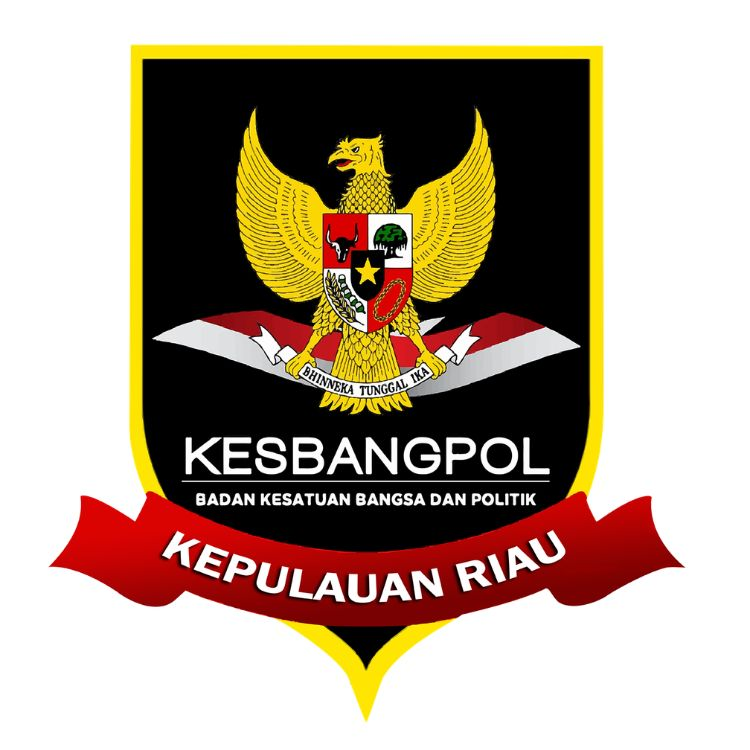
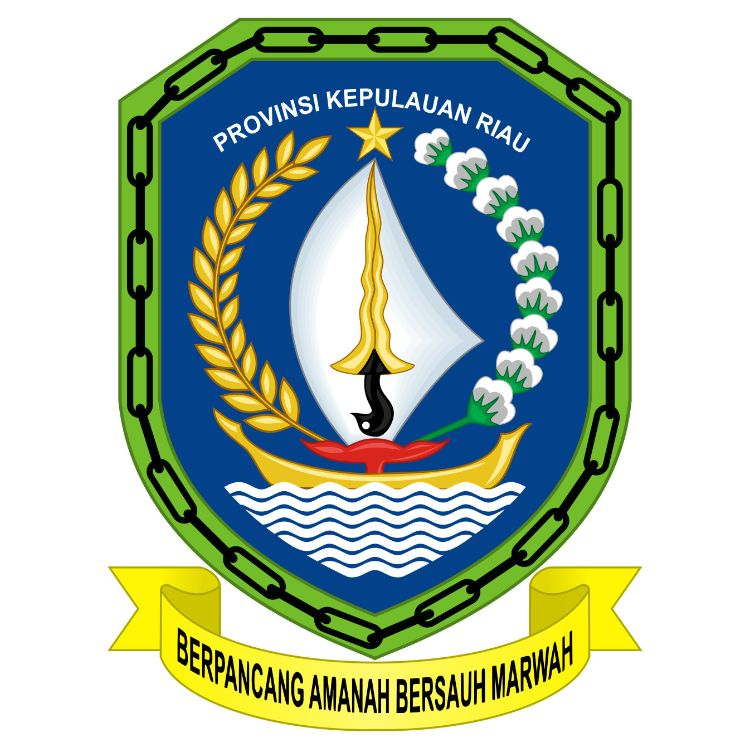

Bidang Politik Dalam Negeri
Badan Kesatuan Bangsa dan Politik Provinsi Kepulauan Riau
KLINIK DEMOKRASI DAN TATA KELOLA PARTAI POLITIK (KIDAL)
Laporkan Pertanggungjawaban Partai Politik Anda.
KETAMPOL/SIPEDAS
Teks.
Layanan Aduan